Te doen in de omgevingThings to do nearby
Het huis staat aan de rand van Nationaal Park Sallandse Heuvelrug: bos, heide en zand beginnen letterlijk aan de overkant. Hieronder eerst wat je te voet of op de fiets doet, daarna de dingen waarvoor je de auto pakt. Openingstijden zijn gecheckt in september 2026. Bij twijfel even de site bekijken, want ze wisselen per seizoen.
The house sits at the edge of Sallandse Heuvelrug National Park: forest, heather and sand start literally across the road. Below, first what you can reach on foot or by bike, then the things worth taking the car for. Opening hours were checked in September 2026. When in doubt, check the website, as they shift with the season.
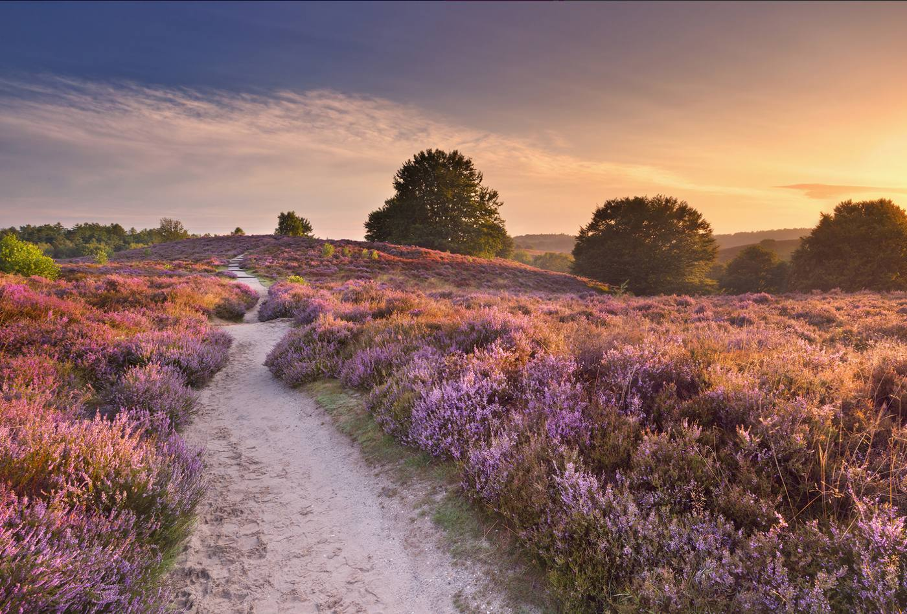
Direct voor de deur 0 m
Buitencentrum: Grotestraat 281, Nijverdal · 0548 61 27 11 · staatsbosbeheer.nl · sallandseheuvelrug.nl
Gemarkeerde wandel- en fietsroutes beginnen bij het Natuurdiorama en bij het Buitencentrum; mountainbikeroutes lopen over de hele heuvelrug. Het Buitencentrum van Staatsbosbeheer is het handigste startpunt: gratis parkeren, kaarten, een expositie en restaurant Buitengewoon Lekker. Open 1 maart t/m 31 oktober dagelijks 10.00–17.00 uur; 1 november t/m 28 februari maandag t/m vrijdag 10.00–16.00 en in het weekend 10.00–17.00 uur.
Waymarked walking and cycling routes start at the Natuurdiorama and at the visitor centre; mountain bike trails run across the whole ridge. The Staatsbosbeheer visitor centre is the easiest starting point: free parking, maps, an exhibition and a restaurant. Open 1 March–31 October daily 10:00–17:00; 1 November–28 February Monday to Friday 10:00–16:00 and weekends 10:00–17:00.
De heide hier is het leefgebied van het korhoen: in Nederland komt de vogel alleen nog op de Sallandse Heuvelrug voor. In augustus staat de hei paars.
This heathland is the home of the black grouse: in the Netherlands the bird survives only on the Sallandse Heuvelrug. In August the heather turns purple.
Holterbergweg 11a, Holten · 0548 366220 · buitengewoonholten.nl
Twee complete 18-holesbanen: een klassieke midgetgolfbaan en een fantasiegolfbaan met eigenwijze obstakels, deels binnen en deels buiten. Het horecapleintje aan de Holtense kant is de plek om na te zitten. Open maandag t/m vrijdag en zondag 11.00–17.00 uur, zaterdag vanaf 13.30 uur.
Two full 18-hole courses: a classic minigolf course and a fantasy course with inventive obstacles, partly indoors and partly out. The little food court on the Holten side is where you sit afterwards. Open Monday to Friday and Sunday 11:00–17:00, Saturday from 13:30.
Binnen én buiten een baan, dus regen is geen reden om af te zeggen.
There is a course indoors as well as out, so rain is no reason to cancel.
In Holten, op loopafstand 400–800 m
Holten · 0548 85 48 80 · zwembad.rijssen-holten.nl
Het gemeentelijke buitenbad: een 25-meterbad, een recreatiebad met duikkuil en een flinke familieglijbaan, een apart peuterbad op een zonnig grasveld en een luchttrampoline. Seizoen 1 mei t/m 31 augustus; de tijden wisselen per dag, dus check het rooster online. Kluisje kost een muntje van 20 cent.
The municipal outdoor pool: a 25-metre pool, a recreation pool with a diving well and a proper family slide, a separate toddler pool on a sunny lawn, and an air trampoline. Season runs 1 May–31 August; hours vary by day, so check the schedule online. Lockers take a 20-cent coin.
Buiten het seizoen is het bad dicht. Binnen zwemmen kan dan bij De Scheg in Deventer.
Outside the season the pool is closed; for indoor swimming, De Scheg in Deventer is the alternative.
Eekhoornweg 10, Holten · canadesebegraafplaatsholten.nl
Op de begraafplaats liggen 1.394 Canadese militairen die sneuvelden bij de bevrijding van Noordoost-Nederland. Het informatiecentrum vertelt hun levensverhalen en de opmars van de Canadezen, met wisselende tentoonstellingen over oorlog en vrijheid. Maart t/m oktober dagelijks 10.00–17.00 uur, november t/m februari woensdag t/m zondag 11.00–16.00 uur. Entree is gratis, parkeren ook.
The cemetery holds 1,394 Canadian soldiers who died liberating the north-east of the Netherlands. The information centre tells their life stories and traces the Canadian advance, with changing exhibitions on war and freedom. March–October daily 10:00–17:00; November–February Wednesday to Sunday 11:00–16:00. Entry and parking are free.
Holtense scholieren adopteren de graven en leggen er bloemen; veel families uit Canada komen hier nog jaarlijks langs.
Schoolchildren from Holten look after the graves and lay flowers; many Canadian families still visit every year.
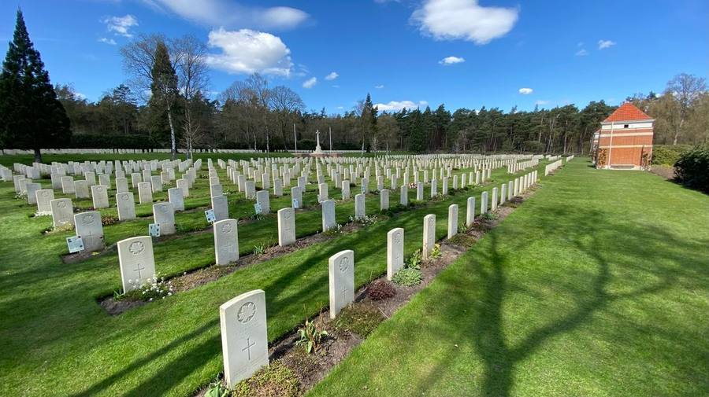
Holterbergweg 12, Holten · museumholterberg.nl
Levensgrote diorama’s nemen je mee van de Sallandse Heuvelrug naar de Wadden, met meer dan duizend Europese dieren. Kinderen krijgen gratis een zoekboekje. Naast het museum liggen het Bos van Daantje Das, een speelbos, en het Groote Kikkerpad. Maandag t/m zaterdag 10.00–17.00 uur, zondag vanaf 11.00 uur.
Life-sized dioramas carry you from the Sallandse Heuvelrug to the Wadden Sea, with more than a thousand European animals. Children get a free spotting booklet. Next to the museum lie the Bos van Daantje Das, a woodland play area, and the Groote Kikkerpad frog trail. Monday to Saturday 10:00–17:00, Sunday from 11:00.
Een van de oudste natuurmusea van Nederland, en tegelijk het startpunt van de mooiste wandelingen het park in.
One of the oldest natural history museums in the country, and at the same time the trailhead for the best walks into the park.
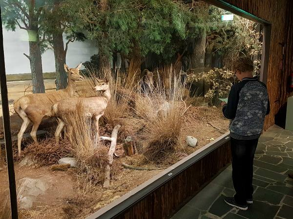
Meester Bosweg 5, Holten · 0548 36 11 69 · speelboerderijdondertman.nl
Kinderboerderij en speelboerderij in één: ponys, konijnen en Schotse hooglanders, een buitenspeeltuin en een binnenspeeltuin voor als het regent. Entree €6 per persoon. April t/m november dagelijks 10.00–17.00 uur, november t/m april woensdag t/m zondag, en in alle schoolvakanties dagelijks.
Petting zoo and play farm in one: ponies, rabbits and Scottish Highland cattle, an outdoor playground and an indoor one for rainy days. Entry €6 per person. April–November daily 10:00–17:00, November–April Wednesday to Sunday, and daily during all school holidays.
Je kunt hier klootschieten, het Twentse spel waarbij je een bal zo ver mogelijk over een landweg gooit.
You can try klootschieten here, the Twente game of hurling a ball as far as you can down a country lane.
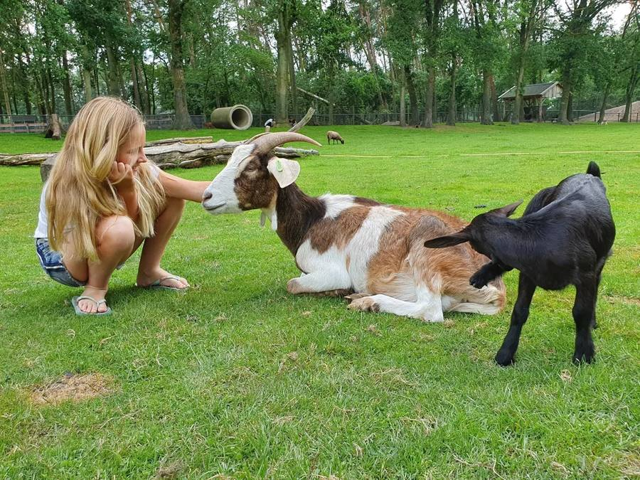
Rijssen en het Reggedal 8–9 km
Pelmolenpad 9a, Rijssen · 0548 549382 · depelmolen.nl · €3,50 / €1,50
Een achtkante olie- en pelmolen uit 1752, nog in bedrijf: er wordt lijnzaadolie geperst en gerst tot gort gepeld. Dinsdag t/m vrijdag van april t/m september 10.00–17.00 uur, van oktober t/m maart 13.00–17.00 uur. Op zaterdag alleen als de molen draait.
An octagonal oil and hulling mill from 1752, still working: linseed is pressed into oil and barley hulled into groats. Tuesday to Friday, April–September 10:00–17:00 and October–March 13:00–17:00. Saturdays only when the mill is turning.
In 1913 stilgezet, in 1975 weer opengesteld. Het is een van de drie grote industriemolens van Twente, en je kunt de lijnzaadolie ter plekke kopen.
Shut down in 1913, reopened to visitors in 1975. It is one of Twente’s three great industrial mills, and you can buy the linseed oil on the spot.
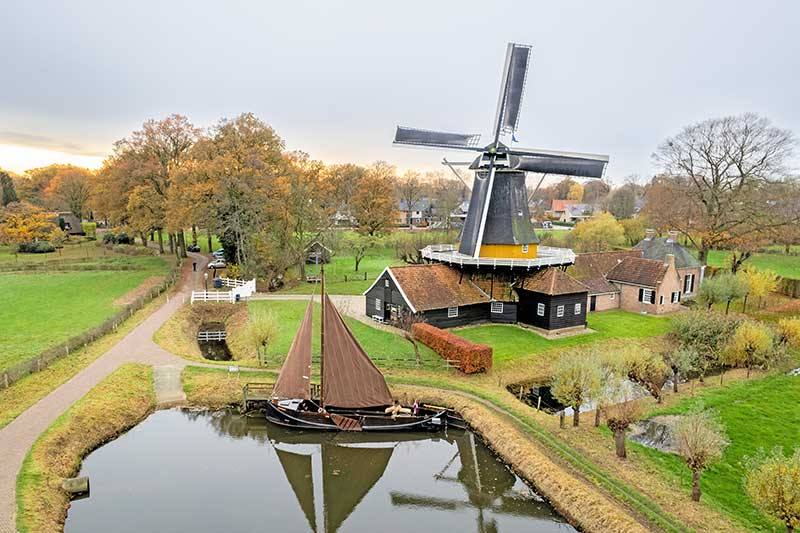
Een compact centrum met verrassend veel modezaken en speciaalwinkels, prettig te belopen. Maandag t/m woensdag 9.30–18.00 uur, donderdag koopavond tot 21.00 uur, vrijdag tot 18.00 uur en zaterdag tot 17.00 uur.
A compact centre with a surprising number of fashion and specialist shops, all easy to walk. Monday to Wednesday 9:30–18:00, Thursday late-night shopping until 21:00, Friday until 18:00 and Saturday until 17:00.
Op zondag is in Rijssen alles dicht, ook de supermarkten. Plan de boodschappen op zaterdag.
On Sundays everything in Rijssen is closed, supermarkets included. Do your shopping on Saturday.
Kasteellaan 1, Rijssen · 0548 514261 · brandweermuseum.nl
Historische brandweerauto’s, stoomspuiten en handbrandblussers, het hele jaar door te zien. Dinsdag t/m zaterdag 10.00–17.00 uur; zondag en maandag gesloten.
Historic fire engines, steam pumps and hand-held extinguishers, open all year. Tuesday to Saturday 10:00–17:00; closed Sunday and Monday.
Een van de weinige musea waar kinderen in de wagens mogen; het museum houdt ook prikkelarme momenten met het geluid uit.
One of the few museums where children may climb into the engines; it also runs low-stimulus sessions with the sound switched off.
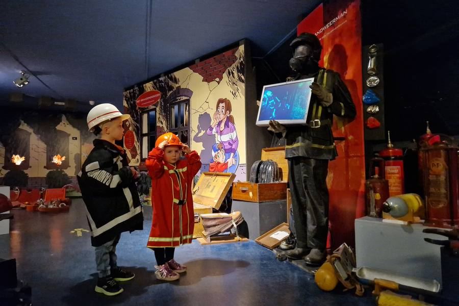
Molendijk 107, Zuna · 0548 512743 · molke.nl
Kano’s vanaf €7,50 per uur voor één persoon, €11 voor een driepersoonskano; suppen €12,50 per uur. Er zijn ook elektrische fluisterbootjes. Van 1 april tot 1 november dagelijks 9.30–17.00 uur. Online reserveren is verstandig.
Kayaks from €7.50 an hour for one person, €11 for a three-seater canoe; SUP boards €12.50 an hour. Electric whisper boats too. 1 April–1 November, daily 9:30–17:00. Booking online is wise.
Vaar stroomafwaarts en je komt langs de Pelmolen in Rijssen: molen bekijken en daarna terugpeddelen.
Paddle downstream and you pass the Pelmolen in Rijssen: see the mill, then paddle back.
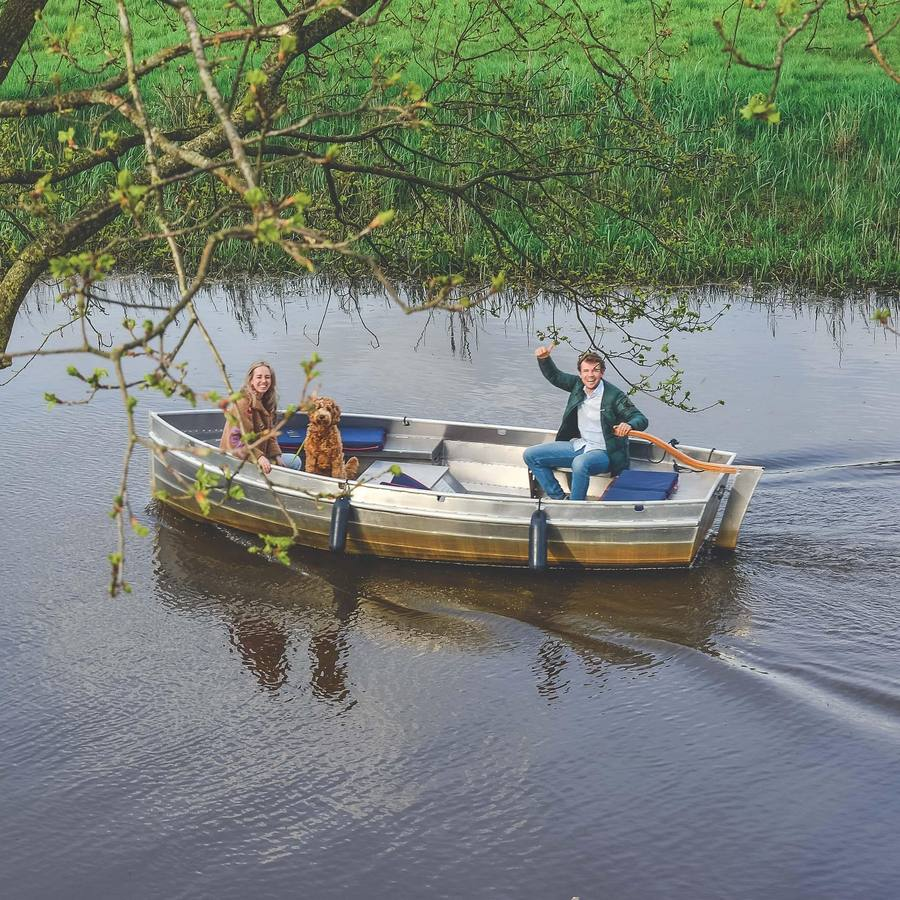
Sportlaan 6, Nijverdal · 0548 681338 · wilgenweard.nl
Kano vanaf €16,50, sup vanaf €12,50 per persoon en sit-on-top vanaf €8,50. Voor groepen ook vlotbouwen en het slingertouw. Activiteiten duren een half uur tot twee uur; reserveren via de site.
Canoe from €16.50, SUP from €12.50 per person, sit-on-top kayak from €8.50. For groups there is raft building and a rope swing over the water. Activities run from half an hour to two hours; book through the site.
In de zomer varen ze ook ’s avonds: sup by night en kano by night, met de Regge helemaal voor jezelf.
In summer they run evening sessions: SUP by night and canoe by night, with the river to yourself.
Nijverdal en Hellendoorn 14–18 km
Grotestraat 13, Nijverdal · 0548 750050 · memorymuseum.nl
Museum over de Tweede Wereldoorlog en vrijheid, geschikt voor jong en oud. Dinsdag t/m zondag 12.00–17.00 uur, maandag gesloten. Entree €11 voor volwassenen, €7,50 voor kinderen van 6 t/m 12, gratis tot 6 jaar; gezinskaart (2+2) €34.
A museum about the Second World War and freedom, pitched at all ages. Tuesday to Sunday 12:00–17:00, closed Monday. Entry €11 for adults, €7.50 for children aged 6–12, free under 6; family ticket (2+2) €34.
Veteranen komen gratis binnen. Samen met de Canadese begraafplaats om de hoek maakt dit een indrukwekkende combinatie.
Veterans enter free. Together with the Canadian cemetery around the corner it makes for a powerful pairing.
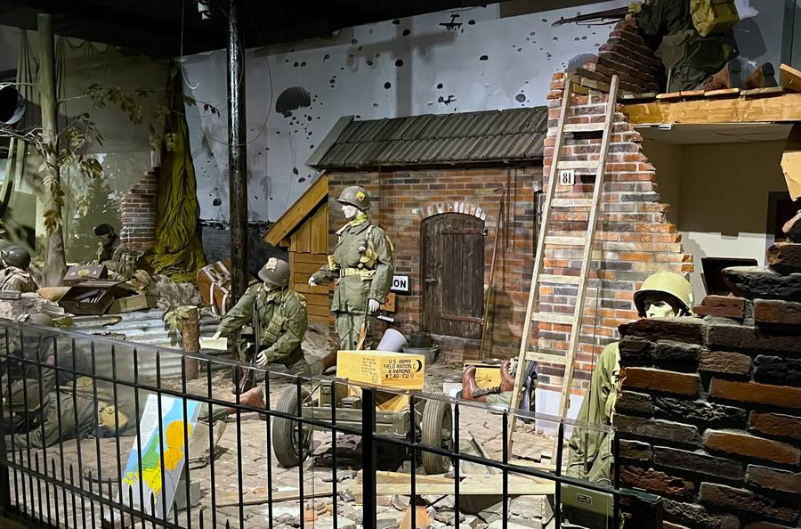
Energiestraat 6, Nijverdal · kartplaza.nl · karten €18,50 p.p.
Karten op een indoorcircuit van ruim 850 meter, lasergamen in een wildweststad, bowlen, paintball, boogschieten en escaperooms. Daarnaast is er een klim- en adventurepark. Dinsdag en donderdag vanaf 18.00 uur, woensdag vanaf 14.00, vrijdag 15.00–23.00, zaterdag 13.00–23.00, zondag 13.00–21.00 uur; maandag gesloten.
Karting on an indoor circuit of more than 850 metres, laser tag in a Wild West town, bowling, paintball, archery and escape rooms, plus a climbing and adventure park. Tuesday and Thursday from 18:00, Wednesday from 14:00, Friday 15:00–23:00, Saturday 13:00–23:00, Sunday 13:00–21:00; closed Monday.
Het circuit is een van de langste indoorkartbanen van Europa. Kinderen vanaf ongeveer 7 jaar kunnen mee.
The track is one of the longest indoor kart circuits in Europe. Children from around seven can take part.
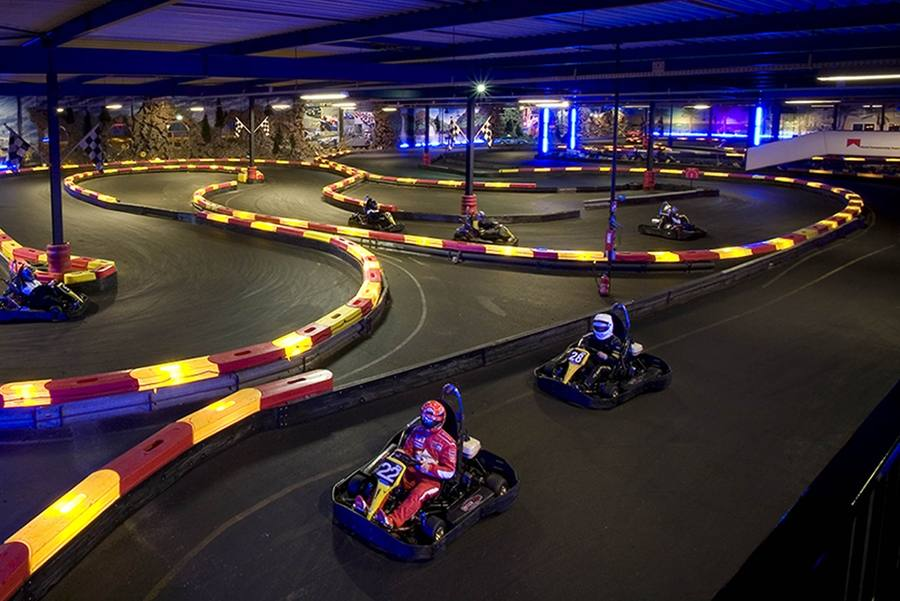
avonturenpark.nl · open april t/m begin november
Ruim 45 attracties, glijbanen en shows in het bos. Het park is open van april tot en met begin november, met wisselende openingstijden: in het voor- en naseizoen niet elke weekdag, dus kijk de kalender op de site na. Het slidepark is open tot half september, als het weer meewerkt.
More than 45 rides, slides and shows set in the woods. Open from April to early November with varying hours: not every weekday in the shoulder seasons, so check the calendar on the site. The slide park runs until mid-September, weather permitting.
Heksendoorn, het halloweenseizoen, loopt in 2026 van 3 oktober tot en met 1 november: versiering, shows, een spookhuis en heksenschool, uitdrukkelijk niet griezelig bedoeld. Op de zaterdagavonden 10, 17, 24 en 31 oktober is er extra avondopening met Odelia’s vuurwerkshow. Kinderen tot 12 mogen verkleed komen, volwassenen niet.
Heksendoorn, the Halloween season, runs from 3 October to 1 November 2026: decorations, shows, a haunted house and a witch school, deliberately gentle rather than scary. On the Saturday evenings of 10, 17, 24 and 31 October the park stays open late for Odelia’s fireworks show. Children under 12 may come in costume; adults may not.
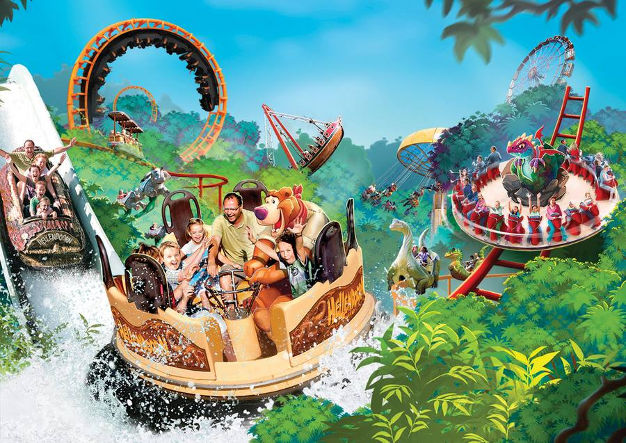
Eerst even zitten
Het mooiste begin van een middag: ergens neerstrijken met iets te drinken. In Holten kan dat in het centrum of boven op de Holterberg, bij ’t Losse Hoes, Hollywood of Hoog Holten, met het bos om je heen. En in Deventer heb je keuze te over: de Brink en het Grote Kerkhof staan in de zon vol met terrassen.
The best way to start an afternoon: settle somewhere with a drink. In Holten that means the village centre or up on the Holterberg at ’t Losse Hoes, Hollywood or Hoog Holten, with the forest around you. And Deventer has plenty: the Brink and the Grote Kerkhof fill up with terraces the moment the sun is out.
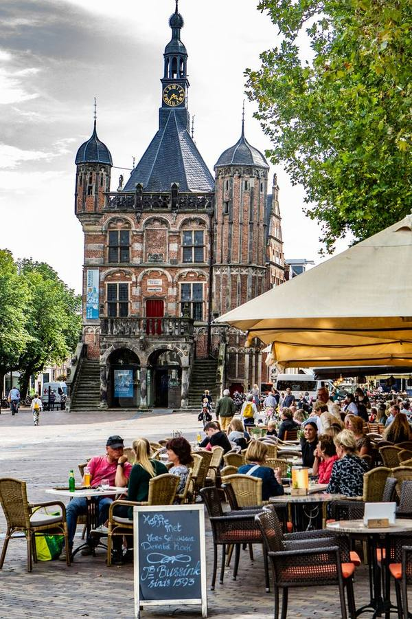
Dagtrips 23–126 km
Museum De Waag: Brink 56 · Speelgoedmuseum: Brink 47 · museumdewaag.nl · hetspeelgoedmuseum.nl
Middeleeuwse binnenstad aan de IJssel. Dwaal door het Bergkwartier en kom uit op de Brink, waar twee musea naast elkaar staan: Museum De Waag over de stadsgeschiedenis (di t/m zo 11.00–17.00 uur, €10, gratis tot 12 jaar) en het Speelgoedmuseum met 450 m² over negen kamers (di t/m zo 11.00–17.00 uur, €9 en €5 voor kinderen). Een combiticket voor beide kost €15.
A medieval town centre on the river IJssel. Wander the Bergkwartier and you come out on the Brink, where two museums sit side by side: Museum De Waag on the city’s history (Tue–Sun 11:00–17:00, €10, free under 12) and the Toy Museum, 450 m² across nine rooms (Tue–Sun 11:00–17:00, €9, children €5). A combined ticket for both is €15.
Verder in Deventer: De Scheg met zwemparadijs en kunstijsbaan (reserveren kan tot vier weken vooruit, aanrader bij regen of vorst) en DAVO stadsbrouwerij met proeflokaal aan de Sluisstraat 6, waar je de brouwers aan het werk ziet.
Also in Deventer: De Scheg, with a swimming paradise and an ice rink (bookable up to four weeks ahead, handy in rain or frost), and DAVO city brewery with its tasting room at Sluisstraat 6, where you can watch the brewers at work.
Museum De Waag zit in het oudste waaggebouw van Nederland. Vanaf station Holten ben je er in ongeveer een kwartier met de trein, dus de auto kan thuisblijven.
Museum De Waag occupies the oldest weigh house in the Netherlands. From Holten station the train takes about fifteen minutes, so the car can stay at home.
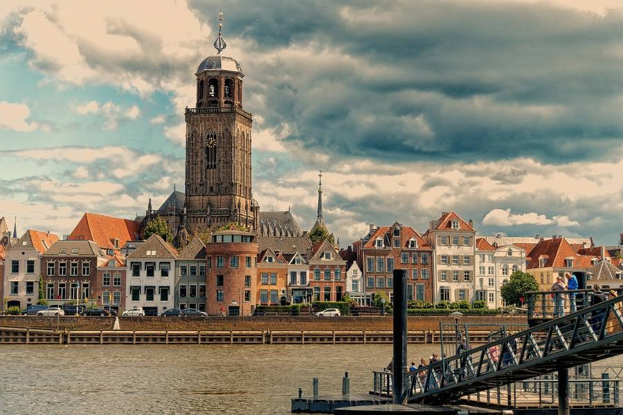
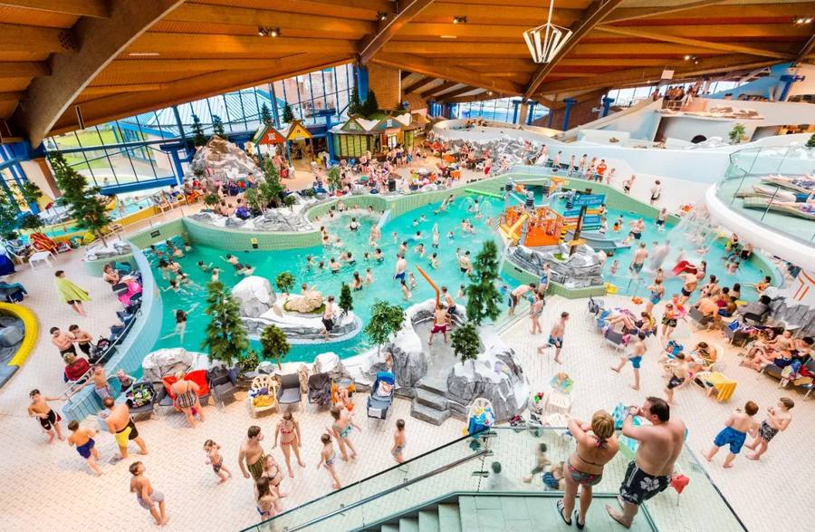
Gorssel: Hoofdstraat 28 · Ruurlo: Vordenseweg 2 · 0575 760300 · moregorssel.nl · moreruurlo.nl
Het museum voor modern realisme, met twee locaties. Gorssel is dinsdag t/m zondag open van 10.00–17.00 uur, Kasteel Ruurlo van 11.00–17.00 uur. Maandag gesloten, behalve in de schoolvakanties.
The museum of modern realism, on two sites. Gorssel opens Tuesday to Sunday 10:00–17:00, Kasteel Ruurlo 11:00–17:00. Closed Mondays, except during school holidays.
Ruurlo is de plek voor Carel Willink: een kasteel met slotgracht, van binnen volledig verbouwd tot museum.
Ruurlo is the place for Carel Willink: a moated castle, entirely rebuilt inside as a museum.
Heino · museumdefundatie.nl
Een van de best bewaarde havezaten van Overijssel, met een beeldentuin rondom, een café en een terras. Dinsdag t/m zondag 11.00–17.00 uur, maandag gesloten.
One of the best-preserved manor houses in Overijssel, with a sculpture garden around it, a café and a terrace. Tuesday to Sunday 11:00–17:00, closed Monday.
De beeldentuin alleen is het bezoek al waard: kunst tussen de weilanden, met het kasteel als achtergrond.
The sculpture garden alone justifies the trip: art among the meadows, with the castle behind it.
Zwolle: Blijmarkt 20 · Enschede: Lasondersingel 129 · museumdefundatie.nl · rijksmuseumtwenthe.nl
Museum de Fundatie in Zwolle is dinsdag t/m zondag open van 11.00–17.00 uur; op de laatste zondag van de maand is er een Stille Zondag van 10.00–11.00 uur en op de eerste vrijdag een avondopening tot 21.00 uur. Rijksmuseum Twenthe in Enschede is dinsdag t/m zondag open van 10.00–17.00 uur; €16,50, gratis tot 18 jaar, met gratis parkeren bij Roombeek.
Museum de Fundatie in Zwolle opens Tuesday to Sunday 11:00–17:00; the last Sunday of the month brings a Silent Sunday from 10:00–11:00 and the first Friday a late opening until 21:00. Rijksmuseum Twenthe in Enschede opens Tuesday to Sunday 10:00–17:00; €16.50, free under 18, with free parking at Roombeek.
Het Zwolse museum is het oude Paleis aan de Blijmarkt met een moderne, met schubben bedekte koepel erbovenop, je ziet hem van ver.
The Zwolle museum is the old palace on the Blijmarkt with a modern, scale-clad dome set on top, visible from a distance.
Golfclub de Koepel, Wierden · Twentsche Golfclub, Ambt-Delden · Het Rijk van Sybrook, Enschede
De dichtstbijzijnde baan is Golfclub de Koepel aan de weg van Rijssen naar Wierden: 18 holes, par 70, aangelegd in de vroegere Wierdense duinen tussen jeneverbes en heide, met een TrackMan-driving range. Verder in Twente: de Twentsche Golfclub in Ambt-Delden (18 holes), Het Rijk van Sybrook bij Enschede (27 holes) en de negenholesbanen Driene in Hengelo en De Lage Mors in Delden. Bel vooraf over greenfee en speelrecht.
The nearest course is Golfclub de Koepel, on the road from Rijssen to Wierden: 18 holes, par 70, laid out in the former Wierden dunes among juniper and heather, with a TrackMan driving range. Further into Twente: Twentsche Golfclub at Ambt-Delden (18 holes), Het Rijk van Sybrook near Enschede (27 holes), and the nine-hole courses Driene in Hengelo and De Lage Mors in Delden. Call ahead about green fees and playing rights.
Met de auto ongeveer anderhalf uur, met de trein vanaf station Holten met één overstap in ruim twee uur. Voor een dag museum en stad is de trein het rustigst: geen parkeerprobleem.
About an hour and a half by car; from Holten station a little over two hours by train with one change. For a day of museums and city the train is the calmer option: no parking to worry about.